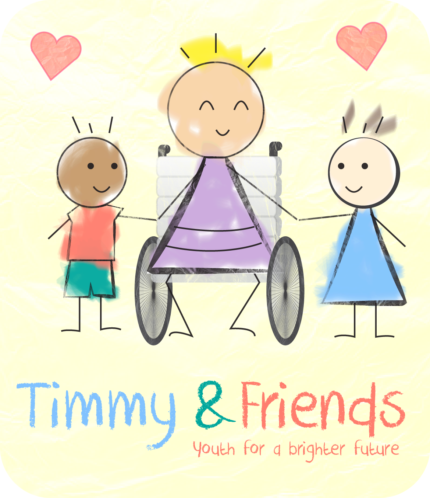

Timmy, my late brother, was the person I will always be closest to. I considered us twins born 21 months apart.
When Tim was two years old he had an accident that robbed him of his physical and vocal capabilities. His mind, however, remained just as sharp, humorous, and unique as before.
Despite the accident, the roles of big brother and little sister never changed, even if they did become somewhat unconventional. We still considered ourselves equals, although I acted as his physical voice. I even saw him as the stronger link in the relationship, because his love and kindness never wavered despite his new physical disadvantages.
No matter the circumstances, Tim always remained wise and understanding. Seeing how Tim was occasionally treated as if his wheelchair meant that his mind also had limitations made me want to yell in frustration. Tim, however, showed me that if simply and kindly explained how to act around people like him, people’s attitudes quickly changed.
Although there were no difficulties in my communication with Timmy, he was troubled by his lack of communication to the outside world. People who took the time to understand him easily connected with him, but he still missed that form of instant communication we all possess: A voice.
During the last years of his life, when he was fifteen, Tim wanted to remove the mentally handicapped diagnosis from his name. He spent a week being examined by doctors like a lab rat to prove to the world that he was mentally fit as you and me.
Timmy & Friends is about giving people like Timmy a greater voice. Even though Timmy is no longer here with us, his legacy lives on. The way he touched people through his willpower inspired people to live with a more open and positive mind. Five years ago, Tim passed away. At first, I did not know how to go on, but now, I have come to the realization that “the teacher does not leave until the student is ready.”
Tim left us with a responsibility to continue the legacy he started: to make sure that no person is denied a voice and that every person is treated with compassion and dignity. Timmy’s legacy cannot be just written, it has to be lived. Timmy & Friend’s goal is to inspire others to live Tim’s legacy.